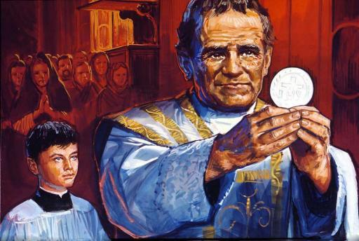
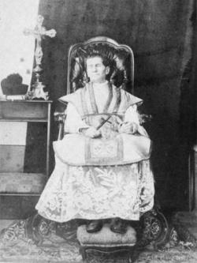
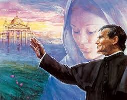
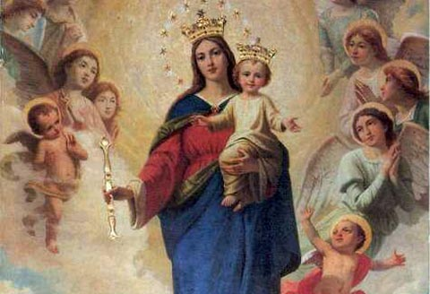
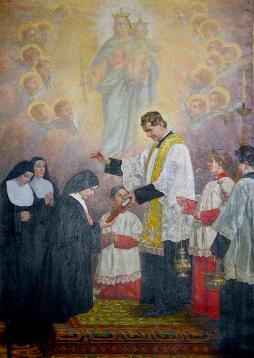
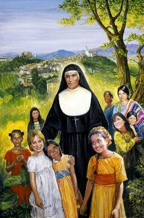
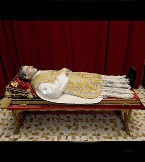
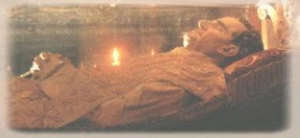
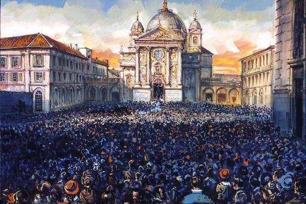

UMA OBRA MARAVILHOSA
VAMOS NOS CHAMAR SALESIANOS
No
dia 26 de Janeiro de 1854, Dom Bosco conversava com quatro rapazes dos que
faziam parte do grupo que o assessorava diretamente. Dizia ele: 
- “Estou sozinho, mas se vocês me ajudarem, faremos milagres. Milhares de meninos pobres nos esperam. NOSSA SENHORA nos dará Oratórios amplos e espaçosos, Igrejas, Casas, Escolas, Oficinas e muitos Padres prontos a nos ajudar. Não só na Itália, mas na Europa e também na América. E até vejo no meio de vocês uma mitra de Bispo”...
Os rapazes se entreolham espantados entre si. Mas Dom Bosco falava sério e continuou:
- “NOSSA SENHORA quer que fundemos uma Sociedade. Pensei longamente que nome lhe dar. Decidi que vamos nos chamar “Salesianos”.
Os quatro eram Miguel Rua, Rocchietti, João Cagliero eArtiglia. E logo em seguida, Dom Bosco contou-lhes um sonho maravilhoso que teve:
- “Certo dia de 1847, após meditar muito sobre o modo de fazer o bem à juventude, me apareceu a RAINHA DO CÉU, que me conduziu a um jardim encantador. Tinha um pórtico muito bonito que dava acesso a um caramanchão coberto de maravilhosos roseirais em plena florescência. O terreno também estava todo coberto de rosas. NOSSA SENHORA me disse:”
- “Tire os sapatos e avance por esse caramanchão. É o caminho que deve fazer”.
- “Comecei a andar, mas percebi que as rosas escondiam espinhos muito agudos. Fui obrigado a parar para calçar os sapatos novamente. Recomecei a andar e apareceu certo número de companheiros que quiseram andar na minha companhia. Rosas existiam por todos os lados e minhas pernas enredando nos ramos estendidos ficavam feridas. Sangrava as minhas mãos e em todas as partes do corpo que eram tocados pelos espinhos. Muitos clérigos, padres e leigos por mim convidados me seguiam, alegres, atraídos pela beleza daquelas rosas. Mas, ao perceber que tinham de caminhar sobre espinhos, começaram a gritar:”
- “Fomos enganados”!”
- “Não poucos retrocederam. Fiquei praticamente só. E comecei a chorar. Mas, logo fui consolado. Vi avançar na minha direção: padres, clérigos e leigos, que me disseram:"
- “Somos todos seus e estamos prontos a segui-lo”.
- “Reiniciei o caminho me pondo à frente deles. Só uns poucos desanimaram e pararam. Percorrido o caramanchão, me vi num belíssimo jardim. Então soprou uma brisa suave, e como por encanto, me vi circundado por um número imenso de jovens e de clérigos, de coadjutores leigos e também de Padres, que se puseram a trabalhar comigo, guiando aquela juventude. Então a VIRGEM MARIA que foi a minha Guia falou:”
- “Sabe o que significa o que você viu antes e está vendo agora? Saiba que o caminho entre rosas e espinhos significa o cuidado que deverá tomar com a juventude e ao lidar com ela: deverá caminhar com o calçado da mortificação. Os espinhos significam os obstáculos, os sofrimentos, os desgostos que virão. Mas não desanime. Com caridade e mortificação, irá superar tudo e chegará às rosas sem espinhos.”
- “Logo que a MÃE DE DEUS acabou de falar, acordei. Estava dormindo no meu quarto. Contei-lhes este maravilhoso sonho, para que cada um de vocês tenha a certeza de que é NOSSA SENHORA que quer a nossa Congregação. E assim, para que nos animemos sempre mais a trabalhar para a maior glória de DEUS”.
PROFESSOR MUITO JOVEM E EFICIENTE

A atmosfera religiosa que circundava os rapazes estudantes era muito intensa. Eles eram os depositários das esperanças das futuras vocações sacerdotais. E Dom Bosco queria que eles permanecessem imersos num clima de religiosidade sacramental, mariana e eclesial.
A Confissão era um hábito semanal ou quinzenal para todos. Dom Bosco ouvia Confissões durante duas ou três horas, todos os dias. A fama muito difundida, da sua capacidade de ler as mentes das pessoas e conhecer os pecados que cometeram, animava e dava uma confiança total aos rapazes. Poucos anos depois do inicio do internato, a Sagrada Comunhão era um Sacramento cotidiano para muitos meninos. A devoção a NOSSA SENHORA era cultivada com grande fervor, e atingiu esplêndida intensidade nos anos de Domingos Sávio, e depois, durante a construção do grande Santuário de MARIA AUXILIADORA. Também o amor ao Papa não era descuidado, ao contrário, era considerado com muito respeito e amizade, lembrando que o Sumo Pontífice era um grande amigo de Dom Bosco.
UMA ROUPA PARA DEUS
No dia 1 de Outubro de 1854, como fazia todos os anos, Dom Bosco subiu até Becchi para a festa de NOSSA SENHORA DO ROSÁRIO, e lá recebeu a visita de seu amigo de seminário Padre Cugliero que era Pároco em Mondônio. Depois dos cumprimentos e da atualização das notícias, Padre Cugliero falou a respeito de um jovem que tinha manifestado interesse em ser sacerdote, e que gostaria de conhecê-lo. Dom Bosco disse que ia ficar alguns dias em Becchi e assim, pediu que o jovem e o pai, viessem conversar com ele, e acrescentou:
- “Falaremos e veremos de que tecido se trata”.
No dia 2 de Outubro, no pátio da casa de José, seu irmão, se deu o encontro de Dom Bosco com Domingos Sávio e o pai dele. É Dom Bosco quem fala:
- “Percebi naquele menino um ânimo todo plasmado segundo o ESPÍRITO DE DEUS. E fiquei muito admirado ao verificar o trabalho que a Graça Divina tinha operado em tão pouca idade. Após o diálogo um tanto prolongado, antes que eu chamasse o pai do rapaz para conversar, ele me disse exatamente estas palavras:”
- “Então, o que lhe parece? Vai me levar a Turim para estudar?”
- “É! Parece-me que o tecido é bom”.
- “E para que pode servir esse tecido?”
- “Para fazer um belo traje e dá-lo de presente a DEUS”.
- “Então, eu sou o tecido, o senhor, o alfaiate. Leve-me, pois consigo, e fará um belo traje para NOSSO SENHOR”.
- “E quando terminar o estudo de latim, que deseja fazer?”
- “Se DEUS me conceder tão grande graça, desejo ardentemente ser sacerdote.”
Na despedida Sávio ainda falou:
- “Espero proceder de tal forma que nunca tenha de se queixar da minha conduta”.
Relembrando as palavras do Padre Cugliero, Dom Bosco teve de admitir que o seu colega sacerdote não exagerou nos elogios feitos ao jovem. Domingos Sávio era um menino inteligente e sorridente, que queria se tornar “um belo traje para dar de presente a NOSSO SENHOR”.
A IMACULADA CONCEIÇÃO DE NOSSA SENHORA

Domingos Sávio, numa pausa desse dia especialmente festivo no Oratório, entrou na Igreja de São Francisco de Sales, ajoelhou diante do Altar de NOSSA SENHORA, e escreveu num pequeno papel. Sua consagração a VIRGEM MARIA:
“MARIA, eu vos dou meu coração,
Fazei que seja sempre Vosso.
JESUS e MARIA, sede sempre meus amigos.
Mas, por piedade, fazei-me morrer antes que
Aconteça-me a desgraça de cometer um só pecado.”
Naquela noite, Turim resplandeceu com uma iluminação fantástica. Milhares de lanterninhas multicoloridas brilhavam nos balcões, nos terraços, nas margens do Rio Pó. Uma grandiosa procissão se encaminhou para o Santuário da CONSOLATA, e os meninos de Valdocco passavam cantando pelas ruas, junto com Dom Bosco.

COMPANHIA DA IMACULADA
No inicio de 1856, os internos no Oratório já eram 153, sendo 63 estudantes e 90 aprendizes.
Domingos Sávio tinha feito uma sólida amizade com Miguel Rua e com João Cagliero, e tinha também outras amizades, com meninos de ótimo comportamento e cheios de fé, como: Bongiovanni, Durando, Cerruti, Gavio, Massaglia e outros.
Na primavera ele teve uma inspiração: Porque não unir todos os jovens mais decididos numa sociedade secreta, formando um grupo unido de pequenos apóstolos? E assim fizeram e escolheram o nome da sociedade: “COMPANHIA DA IMACULADA.”
E para isto, decidiram fazer um regulamento. Pediu sugestões a Dom Bosco e ele achou que os meninos estavam no caminho certo. O pequeno regulamento tinha 21 artigos, que determinava: Os sócios se comprometem a se fazer melhores sob a proteção de NOSSA SENHORA e com o auxílio de NOSSO SENHOR JESUS; deviam sempre ajudar Dom Bosco, se tornando, com prudência e delicadeza, pequenos apóstolos entre os colegas; deviam procurar viver e difundir a alegria e serenidade em torno de si.
A Companhia foi inaugurada no dia 8 de Junho de 1856, diante do Altar de NOSSA SENHORA, na Igreja de São Francisco de Sales. Todos prometeram ser fiéis ao compromisso.
FALECIMENTO DE DONA MARGARIDA
Dia 15 de Novembro de 1856, com 68 anos de idade, a mãe de Dom Bosco adoeceu com uma violenta pneumonia, que a matou em poucos dias. Morreu às três horas da madrugada do dia 25 de Novembro.
Era uma mulher admirável, paciente, prestativa e nunca reclamava de nada. Cozinhava e lavava as panelas, costurava as roupas dos meninos, pregava botões e fazia remendos, ceifava trigo e também lavava e passava as roupas. Serviços simples, mas cansativos e permanentes, pois os rapazes já eram muitos, passavam de três centenas.
Duas horas depois, Dom Bosco chamou Buzzetti, que era o amigo das horas amargas, e chorou copiosamente. Celebrou a Santa Missa por sua mãe na Capela subterrânea do Santuário da CONSOLATA, e diante da imagem de NOSSA SENHORA, ajoelhado, suplicou:
- “Agora, eu e meus filhos estamos sem mãe na terra. Acompanhai-nos e por favor, seja nossa MÃE”.
Alguns dias depois, Miguel Rua foi visitar sua mãe, Dona Joana Maria e conversaram:
- “Depois que Margarida morreu, não sabemos como fazer. Não há ninguém para tomar conta da sopa, remendar as meias e tudo mais. A senhora não gostaria de ir para lá conosco, mamãe, para nos ajudar?”
Com 56 anos de idade, Dona Joana Maria seguiu o filho e se transformou na segunda mãe do Oratório, durante vinte longos anos.
MORREU DOMINGOS SÁVIO
O inverno em Turim se tornou muito rigoroso e Sávio, de frágil constituição não resistiu. Pegou uma tosse terrível e profunda, que preocupou Dom Bosco. Ele chamou os melhores médicos. Veio o Dr. Vallauri que depois de acurado exame diagnosticou:
- “A compleição delicada do rapaz e a continua tensão do espírito, agem como limas que lhe corroem a vida.”
- “E que posso fazer por ele?” Perguntou Dom Bosco.
A medicina naquela época praticamente não existia. Disse Doutor Vallauri:
- “Nada no momento. Mande-o de volta a seus ares natais. Suspenda-lhe por algum tempo os estudos”.
Quando soube da decisão, Domingos se resignou, mas lhe doía muito deixar os estudos, os amigos e principalmente Dom Bosco.
- “Eu gostaria de acabar os meus dias aqui no Oratório”.
- “Nem pense nisso. Você vai para a sua casa, recuperar a saúde e depois voltará”. Disse Dom Bosco.
- “Isso não vai acontecer. Vou e não volto mais. Esta é a última vez que podemos conversar Dom Bosco. Diga-me, que posso ainda fazer para DEUS?”
- “Ofereça-lhe muitas vezes os seus sofrimentos.”
- “E que mais?”
- “Ofereça-lhe também a sua vida”.
Domingo, dia 1º de Março de 1857, comovido ele se despediu dos amigos da Companhia da Imaculada. Depois chegou a carruagem do pai que o levou a Mondônio. Ele faleceu no dia 9 de Março e junto dele estava o seu pai. Apenas teve forças para murmurar:
- “Adeus papai... O Pároco me dizia... Mas não me lembro... Que linda coisa eu estou vendo!...
O Papa Pio XII o declarou Santo no dia 12 de Junho de 1954. Ele foi o primeiro Santo com 15 anos de idade incompletos.
A CONGREGAÇÃO SALESIANA
Em 1857 para alegria de Dom Bosco e de todos aqueles que desfrutavam e gozavam da sua imensa amizade e caridade, o seu sonho de criança já era uma realidade concreta. Depois de Padre Miguel Rua, o incansável e fiel auxiliar imediato dele, ajuntou o Padre Alasonatti, Padre João Batista Francesia, e logo em seguida: Cagliero, Provera, Ghivarello, Lazzero, Bonetti, todos eram rapazes pobres que Dom Bosco recolheu em sua casa e os educou com amor e amizade. Estes rapazes, agora, todos eles eram Sacerdotes, e assumiram as aulas de Religião, de Matemática, de Letras e de Música, de Assistência ao Refeitório, de Assistência as seis Oficinas de Ensino Técnico Profissional, e também assumiram as Aulas e Catequese aos órfãos. Oficialmente em 1859 foi concretizada a fundação da PIA SOCIEDADE DE SÃO FRANCISCO DE SALES (os SALESIANOS).
Em 1863 nasceu à primeira obra Salesiana fora de Turim: o pequeno Seminário Mirabello Monferrato. Depois dele, Dom Bosco continuou na sua incansável luta, abrindo Casas e Colégios em Lanzo, em Alássio, em Sampierdarena, em Varazze, e em Valsálice. Quando Dom Bosco faleceu, já eram 64 Casas da Congregação espalhadas em seis nações, com um contingente humano de 768 Salesianos.
Em Abril de 1864, no terreno de Valdocco, Dom Bosco lançou a pedra fundamental do SANTUÁRIO DE MARIA AUXILIADORA.
 
Assim, no dia 5 de Agosto de 1872, nasceu o INSTITUTO DAS FILHAS DE MARIA AUXILIADORA, sendo a Irmã Maria Domingas Mazzarello, a primeira Superiora. Foi verdadeiramente amada pelas Irmãs e alunas do Colégio, conseguindo com o seu digno exemplo ajudar e educar centenas de meninas pobres.
No dia 11 de Novembro de 1875, no SANTUÁRIO DE MARIA AUXILIADORA, já pronto e em perfeita atividade, Dom Bosco entregou o Crucifixo aos primeiros Missionários Salesianos que vieram para a America do Sul, chefiados pelo Padre João Cagliero.
Em 1877, para manter um permanente contato com todos os colaboradores da imensa Obra Salesiana, Dom Bosco fundou o “Boletim Salesiano” , revista mensal ilustrada que publicava toda a noticia da Congregação e inclusive a correspondência dos Missionários no exterior.
Em 7 de Dezembro de 1884, na BASÍLICA DE MARIA AUXILIADORA, Padre João Cagliero foi Sagrado Bispo. Dom Bosco estava verdadeiramente feliz, pois via realizar outra maravilhosa parte do “seu sonho de criança”.
O ADEUS DE DOM BOSCO
Em Maio de 1887, curvado pelos anos e pelo cansaço, estava celebrando uma Santa Missa no grandioso Altar da Basílica, quando no momento da Consagração, os Sacerdotes que o rodeavam o vêem romper em lágrimas. Um pranto longo, incontido, que o acompanhou por quase toda a Missa. No final, foi amparado até a Sacristia e Padre Viglietti, preocupado lhe sussurrou:
- “Que há Dom Bosco? Sente-se mal?”
Ele meneia a cabeça mostrando que “não”, e disse:
- “Tinha vivo diante dos meus olhos, a cena do meu sonho aos 9 anos de idade. Quando contei aos meus familiares, ouvia perfeitamente minha mãe e meus irmãos discutir sobre o que eu tinha sonhado... E também ouvi com toda clareza a palavra de NOSSA SENHORA sobre a concretização do sonho, em face da minha pergunta, Ela disse:”
- “Há seu tempo, tudo compreenderá”.
Agora, ele olhando para trás, compreendia tudo e viu que valeu a pena: tantos sacrifícios, tanto trabalho, para a salvação de tantos meninos e meninas pobres. E por isso chorou, um choro de alegria, derramando lágrimas de gratidão e da certeza do dever cumprido em honra da MÃE DE DEUS e da adorável SANTÍSSIMA TRINDADE.
Dom Bosco faleceu em Turim, na madrugada do dia 31 de Janeiro de 1888, com 73 anos de idade, murmurando aos Salesianos presentes, suas últimas palavras:
- “Façamos o bem a todos, o mal a ninguém!... Digam aos meus jovens que espero a todos no Céu”.
BEATIFICAÇÃO E CANONIZAÇÃO
O Processo para a Beatificação foi instaurado pelo Papa Pio X, em 1907, e depois dos estudos e comprovações dos milagres feitos por DEUS pela intercessão de Dom Bosco, ele foi BEATIFICADO no dia 02 de Junho de 1929, pelo Papa Pio XI, na Basílica Vaticana totalmente ocupada por fieis em grande regozijo.
Dando continuidade a causa, foram feitos os processos relacionados aos dois últimos milagres apresentados, que foram duas curas excepcionais somente atribuídas à intervenção Divina, que foram alcançadas através das súplicas e intercessão de Dom Bosco. O Decreto foi assinado pelo Sumo Pontífice em 19 de Novembro de 1929. O processo seguiu, e a CANONIZAÇÃO se consumou com a assinatura final do Decreto por Sua Santidade o Papa Pio XI, no dia 01 de Abril de 1934, dia em que se celebrava a Ressurreição de NOSSO SENHOR JESUS CRISTO.
Em 31 de Janeiro de 1988, quando se celebrava o centenário da morte de Dom Bosco (31/01/1888), o Papa João Paulo II oficializou que ele fosse considerado: “Pai e Mestre da Juventude”.


